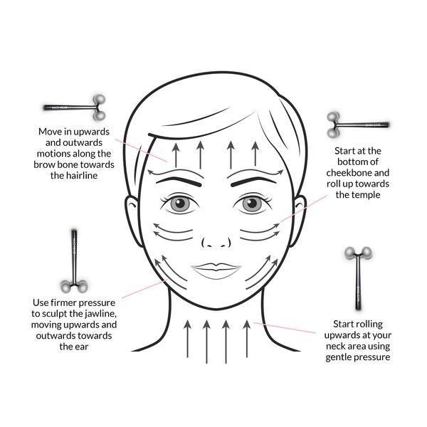

Skincare is one of the most important things if you want to have clear skin.
Before you do anything to your skin, you need to know the reason behind your acne in certain areas.
This is a map that will make it easier for you.
Putting ice on your face or putting your face in a bolw of ice can help you de-puff and tone your skin. But be careful, using ice directly on your face.
Because it can cause irritation and you can damage your skin barrier. So use a microfiber towel, regular tower or whatever you like but don't hold it for to long.
Hold the ice for about 10 seconds repeat 2 to 5 times.
How often you are supposed to use sertan productes on your face.
Scrub can help you exfoliate your face by getting the dead skin out and cleaning in more deaply.
Тhe Skin care pyramid shows the recommended use of certain products and skin treatments.
Face massages can help tone,de-puff and give a nicer shape to the face.Here is how you can do it.
